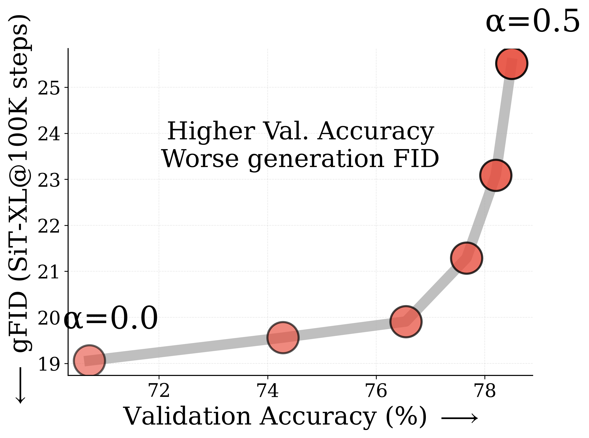

Representation alignment guides diffusion model training by distilling knowledge from pretrained vision encoders.
But what truly drives its effectiveness: global semantic information or spatial structure?
Prevailing wisdom says global information.
Through large-scale empirical analysis we reveal that
spatial structure, not global information, drives generation performance of an external representation.
Global Information Matters Less: Target representations with >60% higher ImageNet-1K accuracy (measure of global information) can underperform for generation.
Spatial Structure Matters More: Spatial structure shows remarkably high correlation (|r| = 0.852) with generation FID, while ImageNet accuracy shows poor correlation (|r| = 0.26).
Accentuating what Matters: Accentuating transfer of spatial features from target representation to diffusion features consistently improves convergence across all diverse training settings.
Representation alignment (REPA) accelerates diffusion model training by distilling knowledge from pretrained vision encoders to intermediate diffusion features.
A fundamental question persists: what aspect of the target representation drives generation performance –
its global semantic information (measured by ImageNet-1K accuracy) or its spatial structure (pairwise similarity between patch tokens)?
Prevailing wisdom holds that performance of a target representation for generation is heavily tied to its global semantic performance (e.g., ImageNet-1K accuracy).
The prevailing understanding suggests:
"When a diffusion transformer is aligned with a pretrained encoder that offers more semantically meaningful representations
(i.e., better linear probing results), the model not only captures better semantics but also exhibits enhanced generation performance,
as reflected by improved validation accuracy with linear probing and lower FID scores."
— REPA (Yu et al., 2024)
We challenge this view. Through large-scale empirical analysis across 27 vision encoders and multiple model scales, we uncover three surprising findings:
§Global Semantic Information Matters Less: We show that target representations with more than 60% higher ImageNet-1K accuracy can underperform for generation. Thus better global accuracy ‚↠better generation.
§Spatial Structure Matters More: We consider several straightforward metrics to measure spatial self-similarity; showing that all spatial metrics show much higher correlation with generation FID than ImageNet-1K accuracy.
§Accentuating what Matters: To further study this, we introduce two straightforward modifications, which specifically accentuate the transfer of spatial information from target representation to di
ffusion features. Our simple method, termed iREPA, consistently improves convergence speed with REPA across diverse settings.
Spatial structure drives representation alignment, not global information.
Our analysis reveals that vision encoders with better spatial structure consistently achieve superior generation quality,
even when they have significantly lower ImageNet accuracy.
The Spatial Structure Metric (SSM) shows remarkably high correlation with generation performance (|r| = 0.852),
while ImageNet accuracy shows poor correlation (|r| = 0.26).
We identify four key trends in representation alignment that cannot be explained by global accuracy (ImageNet-1K performance).
These observations challenge the conventional assumption that better classification accuracy implies better generation with REPA.
Trend 1: Recent Vision Encoders Show Inverse Patterns
Recent vision encoders exhibit surprising inverse relationships between accuracy and generation quality.
PE-Core-G (1.88B params, 82.8% accuracy) performs worse than PE-Spatial-B (80M params, 53.1% accuracy) with FID 32.3 vs 21.0.
Similarly, WebSSL-1B (76.0% accuracy) underperforms PE-Spatial-B despite having 23% higher ImageNet accuracy, yielding FID 26.1 vs 21.0.
Vision encoders with higher accuracy can have worse generation.
Left: PE-G (82.8% acc) vs PE-Spatial-B (53.1% acc) - despite higher validation accuracy, PE-G shows worse generation quality.
Right: WebSSL-1B (76.0% acc) vs PE-Spatial-B (53.1% acc) - similarly, WebSSL-1B has better global performance but worse generation.
Spatial self-similarity provides a better predictor of generation quality. All results at 100K using SiT-XL/2 and REPA.
SAM2-S, with only 24.1% ImageNet accuracy, achieves better generation performance than encoders with ~60% higher accuracy.
This tiny model (46M params) outperforms giants like PE-Core-G (82.8% accuracy) when used for REPA,
demonstrating that global semantic understanding is not the key driver.
Trend 3: Larger Models Within Same Family Perform Worse
Contrary to expectations, larger model variants within the same encoder family often lead to similar (DINOv2) or worse (PE, C-RADIO) generation performance.
Despite having better ImageNet accuracy, these larger models fail to improve—and sometimes harm—generation quality with REPA.
Trend 4: Adding Global Information Actively Hurts Generation
In controlled experiments mixing CLS tokens into patch representations (α ∈ [0, 0.5]),
linear probing accuracy improves from 70.7% to 78.5%.
Yet generation quality deteriorates significantly, with FID worsening from 19.2 to 25.4.
This proves that injecting global information actively harms generation performance.

(a) SAM2 vs "better" encoders
(b) Larger models but worse FID
(c) Adding global info hurts FID
Higher global information does not imply better REPA performance.Top row: Several trends showing global performance (linear probing) does not correlate well with generation FID.
(a) SAM2-S with only 24.1% accuracy outperforms models with ~60% higher accuracy.
(b) Larger encoders within same family can have better validation but worse generation.
(c) Adding global information via CLS token improves accuracy but hurts generation.
Bottom row: Spatial structure provides a much better indicator for generation performance.
These trends cannot be explained by global accuracy. We next show that spatial structure provides a significantly better predictor of generation performance...
Spatial Structure Provides Better Signal
Spatial structure correlates much higher with generation performance
To quantify spatial structure, we measure the spatial self-similarity between patch tokens - essentially how similarity varies with spatial distance.
We perform large-scale correlation analysis across 27 diverse vision encoders.
Spatial structure shows higher correlation with generation quality than linear probing.
Correlation analysis across 27 diverse vision encoders with SiT-XL/2 and REPA.
Linear probing shows weak correlation with FID (Pearson |r| = 0.260), while all spatial structure metrics
demonstrate much stronger correlation: LDS (|r| = 0.852), SRSS (|r| = 0.885), CDS (|r| = 0.847), and RMSC (|r| = 0.888).
Trend generalizes across model scales
The correlation pattern holds consistently across different model sizes - SiT-B, SiT-L, and SiT-XL.
Correlation analysis across model scales.
Linear probing (left) shows weak correlation (|r| < 0.306) while spatial structure (right)
maintains strong correlation (|r| > 0.826) across all model sizes.
If spatial is important, can we use SIFT or HOG?
Surprisingly, yes. Classical spatial features like SIFT, HOG, and intermediate VGG features all lead to performance gains with REPA,
providing further evidence that spatial structure alone drives effectiveness.
Classical spatial features work with REPA.
SIFT, HOG and VGG intermediate features achieve reasonable FID scores,
demonstrating that spatial structure without semantic information can still benefit representation alignment.
Can spatial metrics explain improvements with REPA?
Yes. The spatial structure metrics can explain both the gains from baseline REPA and our improved iREPA method.
Spatial metrics explain REPA effectiveness.
Higher spatial structure scores correlate with better generation performance,
explaining gains from both REPA and iREPA training recipes.
iREPA: Accentuating Spatial Information Transfer
Building on the insight that spatial structure drives REPA performance, we introduce two straightforward modifications to enhance the transfer of spatial information from target representation to diffusion features.
1. Convolutional Projection Layer Instead of MLP
The standard REPA uses a 3-layer MLP to map diffusion features to target representation dimensions.
However, this MLP projection is lossy and diminishes spatial contrast between patch tokens.
We replace it with a lightweight convolutional layer (kernel size 3) that naturally preserves local spatial relationships.
Simpler projection layer for REPA.
Standard MLP projection layer in REPA (middle) loses spatial information while transferring features from target representation (left) to diffusion features.
Using a simpler convolution layer leads to better spatial information transfer (right).
All visualizations at layer 8 with SiT-L/2 and REPA at 100K steps.
2. Spatial Normalization Layer
Patch tokens of pretrained vision encoders contain a global component that limits spatial contrast.
This causes tokens in one semantic region (e.g., tomato) to show high similarity with unrelated tokens (e.g., background).
We introduce spatial normalization that sacrifices this global information to enhance spatial contrast between patches:
y = (x - ùîº[x]) / ‚àö(Var[x] + Œµ)
where expectations are computed across the spatial dimension.
Spatial normalization layer.
Patch tokens of pretrained vision encoders have a global component which limits spatial contrast.
This causes tokens in one semantic region (e.g., tomato) to show decent cosine similarity with unrelated tokens (e.g., background or cucumber).
Spatial normalization sacrifices global information to improve spatial contrast, leading to better generation performance.
Overall Impact
Together, these two modifications significantly enhance the spatial structure of diffusion features,
leading to consistently improved convergence speed across diverse encoders and model sizes.
Overall impact of iREPA on spatial structure.
Comparison of diffusion features' spatial structure between baseline REPA and our improved recipe (iREPA).
iREPA produces features with clearer spatial organization and better semantic coherence.
Despite requiring less than 4 lines of code change, iREPA consistently improves convergence speed across diverse encoders (DINOv2, CLIP, WebSSL, PE-Core),
model sizes (SiT-B, SiT-L, SiT-XL), and training recipes including REPA-E and Meanflow with REPA.
Key Results
1. Accentuating Spatial Transfer Improves Convergence Speed
iREPA consistently achieves faster convergence across diverse vision encoders and model sizes.
Convergence speed improvement.
Accentuating transfer of spatial features from target representation to diffusion model consistently improves convergence.
Results shown across multiple encoders (DINOv3-B, WebSSL-1B, PE-Core-G, CLIP-L, MoCov3, PE-Lang-G) and model sizes (SiT-XL/2, SiT-B/2).
2. Generalization Across Training Recipes
iREPA improvements generalize to different training recipes including REPA-E and MeanFlow with REPA.
Table 2a: REPA-E (SiT-XL/2, 100K steps)
Encoder
IS↑
FID↓
sFID↓
Prec.↑
Rec.↑
WebSSL-1B
52.8
26.5
5.20
0.620
0.585
+iREPA-E
87.0
13.2
5.28
0.699
0.598
PE-G
50.9
25.9
5.68
0.612
0.576
+iREPA-E
80.0
16.4
5.40
0.667
0.616
DINOv3-B
82.2
14.4
4.68
0.694
0.596
+iREPA-E
93.6
11.7
4.57
0.703
0.613
Table 2b: MeanFlow w/ REPA (SiT-B/2, 100K steps)
Encoder
w/o CFG
w/ CFG (2.0)
4 NFE
1 NFE
4 NFE
1 NFE
IS↑
FID↓
IS↑
FID↓
IS↑
FID↓
IS↑
FID↓
WebSSL-1B
27.2
51.4
24.1
58.7
87.9
16.6
69.1
23.7
+iREPA
31.5
45.7
27.3
55.7
100.7
13.9
78.7
20.7
DINOv3-B
28.4
49.6
25.5
57.0
93.3
15.6
72.4
22.6
+iREPA
33.6
44.5
29.7
53.8
124.5
11.1
98.9
17.3
3. Ablation Study: Role of Components
Both spatial normalization and convolution projection contribute significantly to performance gains.
We investigate what truly drives the effectiveness of representation alignment: global information or spatial structure of the target representation?
Through large-scale empirical analysis we uncover a surprising finding: spatial structure, not global information, drives the effectiveness of representation alignment.
We further study this by introducing two simple modifications which accentuate the transfer of spatial information from target representation to diffusion features.
Our simple method, termed iREPA, consistently improves convergence speed with REPA across diverse variations in vision encoders and training recipes.
We hope our work will motivate future research to revisit the fundamental working mechanism of representational alignment and how we can better leverage it for improved training of generative models.
BibTeX
@article{singh2025irepa,
title={{What matters for Representation Alignment: Global Information or Spatial Structure?}},
author={Singh, Jaskirat and Leng, Xingjian and Wu, Zongze and Zheng, Liang and Zhang, Richard and Shechtman, Eli and Xie, Saining},
journal={arXiv preprint},
year={2025}
}